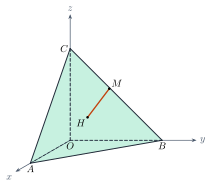

Equations of Lines in SpacePhương trình đường thẳng trong không gian
Grade 12 · Topic: Coordinate Geometry in SpaceLớp 12 · Chủ đề: Phương pháp tọa độ trong không gian
1Lesson IntroductionGiới thiệu bài học
Learning goalsMục tiêu bài học
By the end of this lesson you can:
Sau bài học này, em có thể:
find a direction vector and write parametric and canonical equations of a line;
tìm vectơ chỉ phương, viết phương trình tham số và phương trình chính tắc của đường thẳng;
write the line through two points or through a point perpendicular to a plane;
viết phương trình đường thẳng qua hai điểm, qua một điểm và vuông góc với mặt phẳng;
decide whether two lines are parallel, coincident, intersecting or skew;
xét vị trí tương đối của hai đường thẳng (song song, trùng nhau, cắt nhau, chéo nhau);
describe straight-line motion (drones, planes) with equations.
mô tả chuyển động thẳng (drone, máy bay) bằng phương trình đường thẳng.
2Mathematical VocabularyTừ vựng Toán học
direction vector – a non-zero vector parallel to (or lying on) the line.
vectơ chỉ phương – vectơ khác \(\vec0\) có giá song song hoặc trùng với đường thẳng.
parametric equations – \(x=x_0+at\), \(y=y_0+bt\), \(z=z_0+ct\) (\(t\in\mathbb R\)); each value of \(t\) gives one point of the line.
phương trình tham số – \(x=x_0+at\), \(y=y_0+bt\), \(z=z_0+ct\) (\(t\in\mathbb R\)); mỗi giá trị \(t\) cho một điểm của đường thẳng.
canonical equation – \(\dfrac{x-x_0}{a}=\dfrac{y-y_0}{b}=\dfrac{z-z_0}{c}\) (\(abc\ne0\)).
phương trình chính tắc – \(\dfrac{x-x_0}{a}=\dfrac{y-y_0}{b}=\dfrac{z-z_0}{c}\) (\(abc\ne0\)).
mixed product – the number \([\vec u,\vec v]\cdot\vec w\); it is 0 exactly when the three vectors are coplanar.
tích hỗn tạp – số \([\vec u,\vec v]\cdot\vec w\); bằng 0 khi và chỉ khi ba vectơ đồng phẳng.
3Useful English PhrasesCụm từ tiếng Anh thường gặp
The line passes through \(M\) and has direction vector \(\vec u\).
Đường thẳng đi qua \(M\) và có vectơ chỉ phương \(\vec u\).
Substitute the parametric equations into the plane.
Thay phương trình tham số vào phương trình mặt phẳng.
The two direction vectors are collinear.
Hai vectơ chỉ phương cùng phương.
The lines are skew.
Hai đường thẳng chéo nhau.
For \(t=2\) we get the point \(A\).
Với \(t=2\) ta được điểm \(A\).
4Prerequisite ReviewÔn tập kiến thức nền
From Bài 14: plane \(Ax+By+Cz+D=0\) with normal \(\vec n=(A;B;C)\); cross product \([\vec u,\vec v]\perp\vec u,\vec v\); \(\vec u,\vec v\) collinear \(\iff[\vec u,\vec v]=\vec0\). Grade 10: parametric equations of a line in the plane.
Từ Bài 14: mặt phẳng \(Ax+By+Cz+D=0\) có vectơ pháp tuyến \(\vec n=(A;B;C)\); \([\vec u,\vec v]\) vuông góc với \(\vec u\), \(\vec v\); \(\vec u,\vec v\) cùng phương \(\iff[\vec u,\vec v]=\vec0\). Lớp 10: phương trình tham số của đường thẳng trong mặt phẳng.
5TheoryLý thuyết
5.1 Direction vector. Equations of a lineVectơ chỉ phương. Phương trình đường thẳng
DefinitionsĐịnh nghĩa
\(\vec u\ne\vec0\) is a direction vector of \(\Delta\) if it is parallel to \(\Delta\) (or lies on it). Then \(k\vec u\) (\(k\ne0\)) is also a direction vector.
\(\vec u\ne\vec0\) là vectơ chỉ phương của \(\Delta\) nếu giá của nó song song hoặc trùng với \(\Delta\). Khi đó \(k\vec u\) (\(k\ne0\)) cũng là vectơ chỉ phương.
Through \(M_0(x_0;y_0;z_0)\) with \(\vec u=(a;b;c)\): parametric equations \(\begin{cases}x=x_0+at\\y=y_0+bt\\z=z_0+ct\end{cases}\) (\(t\in\mathbb R\)).
Qua \(M_0(x_0;y_0;z_0)\), có \(\vec u=(a;b;c)\): phương trình tham số \(\begin{cases}x=x_0+at\\y=y_0+bt\\z=z_0+ct\end{cases}\) (\(t\in\mathbb R\)).
If \(abc\ne0\): canonical equation \(\dfrac{x-x_0}{a}=\dfrac{y-y_0}{b}=\dfrac{z-z_0}{c}\).
Nếu \(abc\ne0\): phương trình chính tắc \(\dfrac{x-x_0}{a}=\dfrac{y-y_0}{b}=\dfrac{z-z_0}{c}\).
Useful casesCác trường hợp thường gặp
Through \(A\), \(B\): \(\vec u=\overrightarrow{AB}\).
Qua hai điểm \(A\), \(B\): \(\vec u=\overrightarrow{AB}\).
Through \(M\), perpendicular to \((P)\): \(\vec u=\vec n_P\).
Qua \(M\), vuông góc với \((P)\): \(\vec u=\vec n_P\).
Through \(M\), parallel to \(d\): \(\vec u=\vec u_d\). Perpendicular to two non-collinear vectors \(\vec a,\vec b\): \(\vec u=[\vec a,\vec b]\).
Qua \(M\), song song với \(d\): \(\vec u=\vec u_d\). Vuông góc với hai vectơ không cùng phương \(\vec a,\vec b\): \(\vec u=[\vec a,\vec b]\).

5.2 Relative position of two linesVị trí tương đối của hai đường thẳng
\(d_1\) through \(M_1\), direction \(\vec u_1\); \(d_2\) through \(M_2\), direction \(\vec u_2\)\(d_1\) qua \(M_1\), có \(\vec u_1\); \(d_2\) qua \(M_2\), có \(\vec u_2\)
| PositionVị trí | ConditionĐiều kiện |
|---|---|
| coincidenttrùng nhau | \([\vec u_1,\vec u_2]=\vec0\) and \([\vec u_1,\overrightarrow{M_1M_2}]=\vec0\)\([\vec u_1,\vec u_2]=\vec0\) và \([\vec u_1,\overrightarrow{M_1M_2}]=\vec0\) |
| parallelsong song | \([\vec u_1,\vec u_2]=\vec0\) and \([\vec u_1,\overrightarrow{M_1M_2}]\ne\vec0\)\([\vec u_1,\vec u_2]=\vec0\) và \([\vec u_1,\overrightarrow{M_1M_2}]\ne\vec0\) |
| intersectingcắt nhau | \([\vec u_1,\vec u_2]\ne\vec0\) and \([\vec u_1,\vec u_2]\cdot\overrightarrow{M_1M_2}=0\)\([\vec u_1,\vec u_2]\ne\vec0\) và \([\vec u_1,\vec u_2]\cdot\overrightarrow{M_1M_2}=0\) |
| skewchéo nhau | \([\vec u_1,\vec u_2]\cdot\overrightarrow{M_1M_2}\ne0\)\([\vec u_1,\vec u_2]\cdot\overrightarrow{M_1M_2}\ne0\) |
Watch out!Lưu ý
A line has many equations: another point or another (proportional) direction vector gives a different-looking but equal line. In space, two lines that do not meet need not be parallel – they can be skew.
Một đường thẳng có nhiều phương trình: đổi điểm hoặc đổi vectơ chỉ phương (cùng phương) cho phương trình khác nhưng cùng một đường thẳng. Trong không gian, hai đường thẳng không cắt nhau chưa chắc song song – có thể chéo nhau.
6Worked ExamplesVí dụ có lời giải
ExampleVí dụ 1BasicCơ bản – Writing equationsViết phương trình
Write the parametric and canonical equations of the line \(\Delta\) through \(M(1;-2;3)\) with direction vector \(\vec u=(2;1;-1)\). Does \(A(5;0;1)\) lie on \(\Delta\)?
Viết phương trình tham số và chính tắc của đường thẳng \(\Delta\) qua \(M(1;-2;3)\), có vectơ chỉ phương \(\vec u=(2;1;-1)\). Điểm \(A(5;0;1)\) có thuộc \(\Delta\) không?
Analysis: Use the formulas; for \(A\) look for one value of \(t\).
Phân tích: Dùng công thức; với \(A\), tìm một giá trị \(t\) chung.
\(\begin{cases}x=1+2t\\y=-2+t\\z=3-t\end{cases}\); \(\dfrac{x-1}{2}=\dfrac{y+2}{1}=\dfrac{z-3}{-1}\).
\(\begin{cases}x=1+2t\\y=-2+t\\z=3-t\end{cases}\); \(\dfrac{x-1}{2}=\dfrac{y+2}{1}=\dfrac{z-3}{-1}\).
\(5=1+2t\Rightarrow t=2\); then \(y=-2+2=0\), \(z=3-2=1\) ✓.
\(5=1+2t\Rightarrow t=2\); khi đó \(y=-2+2=0\), \(z=3-2=1\) ✓.
Yes, \(A\in\Delta\) (it corresponds to \(t=2\)).
Có, \(A\in\Delta\) (ứng với \(t=2\)).
ExampleVí dụ 2BasicCơ bản – Line through two pointsĐường thẳng qua hai điểm
Write the canonical equation of the line \(AB\) with \(A(1;0;2)\), \(B(3;-1;4)\).
Viết phương trình chính tắc của đường thẳng \(AB\) với \(A(1;0;2)\), \(B(3;-1;4)\).
Analysis: \(\vec u=\overrightarrow{AB}\).
Phân tích: \(\vec u=\overrightarrow{AB}\).
\(\overrightarrow{AB}=(2;-1;2)\).
\(\overrightarrow{AB}=(2;-1;2)\).
Through \(A\): \(\dfrac{x-1}{2}=\dfrac{y}{-1}=\dfrac{z-2}{2}\).
Qua \(A\): \(\dfrac{x-1}{2}=\dfrac{y}{-1}=\dfrac{z-2}{2}\).
\(\dfrac{x-1}{2}=\dfrac{y}{-1}=\dfrac{z-2}{2}\).
\(\dfrac{x-1}{2}=\dfrac{y}{-1}=\dfrac{z-2}{2}\).
ExampleVí dụ 3IntermediateTrung bình – Perpendicular to a planeVuông góc với mặt phẳng
Write the equation of the line \(d\) through \(M(2;-1;1)\) perpendicular to \((P): x-2y+2z-15=0\). Find the foot \(H\) of the perpendicular and the distance \(MH\).
Viết phương trình đường thẳng \(d\) qua \(M(2;-1;1)\) và vuông góc với \((P): x-2y+2z-15=0\). Tìm hình chiếu vuông góc \(H\) của \(M\) trên \((P)\) và độ dài \(MH\).
Analysis: \(\vec u_d=\vec n_P\); substitute \(d\) into \((P)\).
Phân tích: \(\vec u_d=\vec n_P\); thay \(d\) vào \((P)\).
\(d: \begin{cases}x=2+t\\y=-1-2t\\z=1+2t\end{cases}\).
\(d: \begin{cases}x=2+t\\y=-1-2t\\z=1+2t\end{cases}\).
\((2+t)-2(-1-2t)+2(1+2t)-15=0\iff9t-9=0\iff t=1\), so \(H(3;-3;3)\).
\((2+t)-2(-1-2t)+2(1+2t)-15=0\iff9t-9=0\iff t=1\), nên \(H(3;-3;3)\).
\(MH=|\overrightarrow{MH}|=|(1;-2;2)|=3\) (equal to \(d(M,(P))=\frac{|2+2+2-15|}{3}=3\)).
\(MH=|\overrightarrow{MH}|=|(1;-2;2)|=3\) (bằng \(d(M,(P))=\frac{|2+2+2-15|}{3}=3\)).
\(H(3;-3;3)\), \(MH=3\).
\(H(3;-3;3)\), \(MH=3\).
ExampleVí dụ 4IntermediateTrung bình – Relative positionsVị trí tương đối
\(d: \begin{cases}x=1+t\\y=2-t\\z=3+2t\end{cases}\). Find the position of \(d\) relative to \(d_2: \begin{cases}x=3-2s\\y=2s\\z=6-4s\end{cases}\), \(d_3: \begin{cases}x=1+s\\y=1\\z=4+s\end{cases}\), \(d_4: \begin{cases}x=s\\y=s\\z=1\end{cases}\) (parameter \(s\)).
Cho \(d: \begin{cases}x=1+t\\y=2-t\\z=3+2t\end{cases}\). Xét vị trí tương đối của \(d\) với \(d_2: \begin{cases}x=3-2s\\y=2s\\z=6-4s\end{cases}\), \(d_3: \begin{cases}x=1+s\\y=1\\z=4+s\end{cases}\), \(d_4: \begin{cases}x=s\\y=s\\z=1\end{cases}\) (tham số \(s\)).
Analysis: \(\vec u=(1;-1;2)\), \(M(1;2;3)\). Compute cross products and mixed products.
Phân tích: \(\vec u=(1;-1;2)\), \(M(1;2;3)\). Tính tích có hướng và tích hỗn tạp.
\(d_2\): \(\vec u_2=(-2;2;-4)=-2\vec u\); \(\overrightarrow{MM_2}=(2;-2;3)\) is not collinear with \(\vec u\): parallel.
\(d_2\): \(\vec u_2=(-2;2;-4)=-2\vec u\); \(\overrightarrow{MM_2}=(2;-2;3)\) không cùng phương với \(\vec u\): song song.
\(d_3\): \([\vec u,\vec u_3]=(-1;\,1;\,1)\ne\vec0\), \(\overrightarrow{MM_3}=(0;\,-1;\,1)\), mixed product \(=0\): intersecting at \((2;1;5)\) (\(t=s=1\)).
\(d_3\): \([\vec u,\vec u_3]=(-1;\,1;\,1)\ne\vec0\), \(\overrightarrow{MM_3}=(0;\,-1;\,1)\), tích hỗn tạp \(=0\): cắt nhau tại \((2;1;5)\) (\(t=s=1\)).
\(d_4\): \([\vec u,\vec u_4]=(-2;\,2;\,2)\), \(\overrightarrow{MM_4}=(-1;\,-2;\,-2)\), mixed product \(=-6\ne0\): skew.
\(d_4\): \([\vec u,\vec u_4]=(-2;\,2;\,2)\), \(\overrightarrow{MM_4}=(-1;\,-2;\,-2)\), tích hỗn tạp \(=-6\ne0\): chéo nhau.
\(d\parallel d_2\); \(d\) cuts \(d_3\) at \((2;1;5)\); \(d\) and \(d_4\) are skew.
\(d\parallel d_2\); \(d\) cắt \(d_3\) tại \((2;1;5)\); \(d\) và \(d_4\) chéo nhau.
ExampleVí dụ 5AdvancedNâng cao – A climbing aircraftMáy bay lấy độ cao
In a coordinate system in kilometres (\(Oxy\) is the ground), an aircraft passes \(A(0;0;1)\) and climbs in a straight line; after each minute its position changes by \(\vec v=(4;3;1)\). When does it reach an altitude of 5 km, where is it, and how far is it (horizontally) from the point above which it passed \(A\)?
Trong hệ tọa độ đơn vị kilômét (\((Oxy)\) là mặt đất), một máy bay đi qua \(A(0;0;1)\) và bay thẳng lên; mỗi phút vị trí thay đổi một vectơ \(\vec v=(4;3;1)\). Khi nào máy bay đạt độ cao 5 km, khi đó ở đâu và cách điểm xuất phát bao xa theo phương ngang?
Analysis: Path: \(\begin{cases}x=4t\\y=3t\\z=1+t\end{cases}\) (\(t\) in minutes).
Phân tích: Quỹ đạo: \(\begin{cases}x=4t\\y=3t\\z=1+t\end{cases}\) (\(t\) tính bằng phút).
\(z=1+t=5\iff t=4\).
\(z=1+t=5\iff t=4\).
Position \((16;12;5)\); horizontal distance \(\sqrt{16^2+12^2}=20\) km.
Vị trí \((16;12;5)\); khoảng cách ngang \(\sqrt{16^2+12^2}=20\) km.
After 4 minutes, at \((16;12;5)\), 20 km away horizontally.
Sau 4 phút, tại \((16;12;5)\), cách 20 km theo phương ngang.
7PracticeBài tập luyện tập
A. Multiple ChoiceA. Trắc nghiệm nhiều lựa chọn
A direction vector of \(\dfrac{x-1}{2}=\dfrac{y+2}{3}=\dfrac{z}{-1}\) is…
Một vectơ chỉ phương của đường thẳng \(\dfrac{x-1}{2}=\dfrac{y+2}{3}=\dfrac{z}{-1}\) là…
Answer: a. The denominators give \((2;\,3;\,-1)\); multiply by \(-2\).
Đáp án a. Các mẫu số cho \((2;\,3;\,-1)\); nhân với \(-2\).
The line through \(A(1;\,2;\,3)\) and \(B(3;\,1;\,5)\) is…
Đường thẳng qua \(A(1;\,2;\,3)\) và \(B(3;\,1;\,5)\) có phương trình…
Answer: d. \(\overrightarrow{AB}=(2;\,-1;\,2)\), through \(A\).
Đáp án d. \(\overrightarrow{AB}=(2;\,-1;\,2)\), qua \(A\).
The line through \(M(1;\,1;\,1)\) perpendicular to \((P): x+2y+2z-14=0\) meets \((P)\) at…
Đường thẳng qua \(M(1;\,1;\,1)\) vuông góc với \((P): x+2y+2z-14=0\) cắt \((P)\) tại…
Answer: a. Substitute \(M+t\vec n\): \(t=1\).
Đáp án a. Thay \(M+t\vec n\) vào: \(t=1\).
B. True or FalseB. Đúng hoặc sai
The lines \(\begin{cases}x=1+t\\y=2t\\z=2-t\end{cases}\) and \(\begin{cases}x=3-2s\\y=4-4s\\z=2s\end{cases}\) are parallel.
Hai đường thẳng \(\begin{cases}x=1+t\\y=2t\\z=2-t\end{cases}\) và \(\begin{cases}x=3-2s\\y=4-4s\\z=2s\end{cases}\) song song.
\([\vec u_1,\vec u_2]=(0;\,0;\,0)\), mixed product \(0\): they are coincident.
\([\vec u_1,\vec u_2]=(0;\,0;\,0)\), tích hỗn tạp \(0\): trùng nhau.
The point \((5;\,1;\,8)\) lies on \(\dfrac{x-1}{2}=\dfrac{y+1}{1}=\dfrac{z-2}{3}\).
Điểm \((5;\,1;\,8)\) thuộc đường thẳng \(\dfrac{x-1}{2}=\dfrac{y+1}{1}=\dfrac{z-2}{3}\).
The three ratios are \(2, 2, 2\).
Ba tỉ số lần lượt là \(2, 2, 2\).
C. Short AnswerC. Trả lời ngắn
\(d: \begin{cases}x=1+t\\y=2t\\z=-2+t\end{cases}\) meets \((P): x+y+z-7=0\) at the point with parameter \(t=\)?
Đường thẳng \(d: \begin{cases}x=1+t\\y=2t\\z=-2+t\end{cases}\) cắt \((P): x+y+z-7=0\) tại điểm ứng với \(t=\)?
Enter a number.
Nhập một số.
\(4t-8=0\Rightarrow t=2\).
\(4t-8=0\Rightarrow t=2\).
An aircraft at \((0;\,0;\,1)\) (km) moves by \(\vec v=(3;\,4;\,1)\) each minute. After how many minutes is its altitude \(6\) km?
Máy bay ở \((0;\,0;\,1)\) (km), mỗi phút dịch chuyển \(\vec v=(3;\,4;\,1)\). Sau bao nhiêu phút máy bay ở độ cao \(6\) km?
Enter a number.
Nhập một số.
\(z=1+1t=6\Rightarrow t=5\).
\(z=1+1t=6\Rightarrow t=5\).
A. Multiple ChoiceA. Trắc nghiệm nhiều lựa chọn
A direction vector of \(\dfrac{x+1}{1}=\dfrac{y-3}{-2}=\dfrac{z-2}{4}\) is…
Một vectơ chỉ phương của đường thẳng \(\dfrac{x+1}{1}=\dfrac{y-3}{-2}=\dfrac{z-2}{4}\) là…
Answer: a. The denominators give \((1;\,-2;\,4)\); multiply by \(3\).
Đáp án a. Các mẫu số cho \((1;\,-2;\,4)\); nhân với \(3\).
The line through \(A(0;\,-1;\,2)\) and \(B(2;\,3;\,1)\) is…
Đường thẳng qua \(A(0;\,-1;\,2)\) và \(B(2;\,3;\,1)\) có phương trình…
Answer: b. \(\overrightarrow{AB}=(2;\,4;\,-1)\), through \(A\).
Đáp án b. \(\overrightarrow{AB}=(2;\,4;\,-1)\), qua \(A\).
The line through \(M(2;\,0;\,-1)\) perpendicular to \((P): 2x-y+2z+7=0\) meets \((P)\) at…
Đường thẳng qua \(M(2;\,0;\,-1)\) vuông góc với \((P): 2x-y+2z+7=0\) cắt \((P)\) tại…
Answer: b. Substitute \(M+t\vec n\): \(t=-1\).
Đáp án b. Thay \(M+t\vec n\) vào: \(t=-1\).
B. True or FalseB. Đúng hoặc sai
The lines \(\begin{cases}x=t\\y=1+t\\z=1\end{cases}\) and \(\begin{cases}x=1\\y=s\\z=2+s\end{cases}\) are skew.
Hai đường thẳng \(\begin{cases}x=t\\y=1+t\\z=1\end{cases}\) và \(\begin{cases}x=1\\y=s\\z=2+s\end{cases}\) chéo nhau.
\([\vec u_1,\vec u_2]=(1;\,-1;\,1)\), mixed product \(3\): they are skew.
\([\vec u_1,\vec u_2]=(1;\,-1;\,1)\), tích hỗn tạp \(3\): chéo nhau.
The point \((4;\,-6;\,2)\) lies on \(\dfrac{x-2}{1}=\dfrac{y}{-3}=\dfrac{z+1}{2}\).
Điểm \((4;\,-6;\,2)\) thuộc đường thẳng \(\dfrac{x-2}{1}=\dfrac{y}{-3}=\dfrac{z+1}{2}\).
The three ratios are \(2, 2, \dfrac{3}{2}\).
Ba tỉ số lần lượt là \(2, 2, \dfrac{3}{2}\).
C. Short AnswerC. Trả lời ngắn
\(d: \begin{cases}x=2+t\\y=1-t\\z=2t\end{cases}\) meets \((P): 2x+y-z+1=0\) at the point with parameter \(t=\)?
Đường thẳng \(d: \begin{cases}x=2+t\\y=1-t\\z=2t\end{cases}\) cắt \((P): 2x+y-z+1=0\) tại điểm ứng với \(t=\)?
Enter a number.
Nhập một số.
\(-1t+6=0\Rightarrow t=6\).
\(-1t+6=0\Rightarrow t=6\).
An aircraft at \((5;\,2;\,2)\) (km) moves by \(\vec v=(2;\,2;\,1)\) each minute. After how many minutes is its altitude \(9\) km?
Máy bay ở \((5;\,2;\,2)\) (km), mỗi phút dịch chuyển \(\vec v=(2;\,2;\,1)\). Sau bao nhiêu phút máy bay ở độ cao \(9\) km?
Enter a number.
Nhập một số.
\(z=2+1t=9\Rightarrow t=7\).
\(z=2+1t=9\Rightarrow t=7\).
A. Multiple ChoiceA. Trắc nghiệm nhiều lựa chọn
A direction vector of \(\dfrac{x-3}{-3}=\dfrac{y}{1}=\dfrac{z+4}{2}\) is…
Một vectơ chỉ phương của đường thẳng \(\dfrac{x-3}{-3}=\dfrac{y}{1}=\dfrac{z+4}{2}\) là…
Answer: d. The denominators give \((-3;\,1;\,2)\); multiply by \(2\).
Đáp án d. Các mẫu số cho \((-3;\,1;\,2)\); nhân với \(2\).
The line through \(A(-2;\,1;\,0)\) and \(B(1;\,3;\,-2)\) is…
Đường thẳng qua \(A(-2;\,1;\,0)\) và \(B(1;\,3;\,-2)\) có phương trình…
Answer: b. \(\overrightarrow{AB}=(3;\,2;\,-2)\), through \(A\).
Đáp án b. \(\overrightarrow{AB}=(3;\,2;\,-2)\), qua \(A\).
The line through \(M(-1;\,2;\,3)\) perpendicular to \((P): x-2y+z-10=0\) meets \((P)\) at…
Đường thẳng qua \(M(-1;\,2;\,3)\) vuông góc với \((P): x-2y+z-10=0\) cắt \((P)\) tại…
Answer: b. Substitute \(M+t\vec n\): \(t=2\).
Đáp án b. Thay \(M+t\vec n\) vào: \(t=2\).
B. True or FalseB. Đúng hoặc sai
The lines \(\begin{cases}x=1+2t\\y=1-t\\z=t\end{cases}\) and \(\begin{cases}x=3+s\\y=s\\z=1+2s\end{cases}\) are intersecting.
Hai đường thẳng \(\begin{cases}x=1+2t\\y=1-t\\z=t\end{cases}\) và \(\begin{cases}x=3+s\\y=s\\z=1+2s\end{cases}\) cắt nhau.
\([\vec u_1,\vec u_2]=(-3;\,-3;\,3)\), mixed product \(0\): they are intersecting.
\([\vec u_1,\vec u_2]=(-3;\,-3;\,3)\), tích hỗn tạp \(0\): cắt nhau.
The point \((-2;\,6;\,5)\) lies on \(\dfrac{x}{-1}=\dfrac{y-2}{2}=\dfrac{z+1}{3}\).
Điểm \((-2;\,6;\,5)\) thuộc đường thẳng \(\dfrac{x}{-1}=\dfrac{y-2}{2}=\dfrac{z+1}{3}\).
The three ratios are \(2, 2, 2\).
Ba tỉ số lần lượt là \(2, 2, 2\).
C. Short AnswerC. Trả lời ngắn
\(d: \begin{cases}x=-1+2t\\y=3+t\\z=2-t\end{cases}\) meets \((P): x-y+3z+20=0\) at the point with parameter \(t=\)?
Đường thẳng \(d: \begin{cases}x=-1+2t\\y=3+t\\z=2-t\end{cases}\) cắt \((P): x-y+3z+20=0\) tại điểm ứng với \(t=\)?
Enter a number.
Nhập một số.
\(-2t+22=0\Rightarrow t=11\).
\(-2t+22=0\Rightarrow t=11\).
An aircraft at \((4;\,-3;\,0)\) (km) moves by \(\vec v=(1;\,2;\,2)\) each minute. After how many minutes is its altitude \(10\) km?
Máy bay ở \((4;\,-3;\,0)\) (km), mỗi phút dịch chuyển \(\vec v=(1;\,2;\,2)\). Sau bao nhiêu phút máy bay ở độ cao \(10\) km?
Enter a number.
Nhập một số.
\(z=0+2t=10\Rightarrow t=5\).
\(z=0+2t=10\Rightarrow t=5\).
D. Self-practice: Multiple ChoiceD. Tự luyện: trắc nghiệm
The line through \(M(0;\,2;\,4)\) with direction vector \(\vec u=(-3;\,2;\,1)\) has parametric equations…
Đường thẳng đi qua \(M(0;\,2;\,4)\) và có vectơ chỉ phương \(\vec u=(-3;\,2;\,1)\) có phương trình tham số…
Answer: b. \(x=x_0+at\), \(y=y_0+bt\), \(z=z_0+ct\) with \(M(x_0;y_0;z_0)\), \(\vec u=(a;b;c)\).
Đáp án b. \(x=x_0+at\), \(y=y_0+bt\), \(z=z_0+ct\) với \(M(x_0;y_0;z_0)\), \(\vec u=(a;b;c)\).
A direction vector of the line \(\dfrac{x-2}{3}=\dfrac{y}{-1}=\dfrac{z-4}{-2}\) is…
Một vectơ chỉ phương của đường thẳng \(\dfrac{x-2}{3}=\dfrac{y}{-1}=\dfrac{z-4}{-2}\) là…
Answer: c. The denominators give \(\vec u=(3;\,-1;\,-2)\); \((9;\,-3;\,-6)\) is a non-zero multiple of it.
Đáp án c. Các mẫu số cho \(\vec u=(3;\,-1;\,-2)\); \((9;\,-3;\,-6)\) là một bội khác 0 của nó.
The line \(AB\) with \(A(3;\,4;\,1)\), \(B(0;\,-2;\,2)\) has the canonical equation…
Đường thẳng \(AB\) với \(A(3;\,4;\,1)\), \(B(0;\,-2;\,2)\) có phương trình chính tắc…
Answer: a. \(\overrightarrow{AB}=(-3;\,-6;\,1)\) and the line passes through \(A\).
Đáp án a. \(\overrightarrow{AB}=(-3;\,-6;\,1)\), đường thẳng đi qua \(A\).
Which point lies on the line \(\begin{cases}x=0\\y=3+2t\\z=-2+2t\end{cases}\)?
Điểm nào thuộc đường thẳng \(\begin{cases}x=0\\y=3+2t\\z=-2+2t\end{cases}\)?
Answer: d. Take \(t=2\): \((0;\,7;\,2)\).
Đáp án d. Lấy \(t=2\): được \((0;\,7;\,2)\).
The line through \(M(-2;\,0;\,-1)\) perpendicular to \((P): 2x-3y-2z=0\) is…
Đường thẳng đi qua \(M(-2;\,0;\,-1)\) và vuông góc với \((P): 2x-3y-2z=0\) là…
Answer: d. Its direction vector is the normal vector \(\vec n=(2;\,-3;\,-2)\).
Đáp án d. Vectơ chỉ phương là vectơ pháp tuyến \(\vec n=(2;\,-3;\,-2)\).
The line \(\begin{cases}x=4+t\\y=2t\\z=2+2t\end{cases}\) meets the plane \(x-2y-2z+14=0\) at…
Giao điểm của đường thẳng \(\begin{cases}x=4+t\\y=2t\\z=2+2t\end{cases}\) và mặt phẳng \(x-2y-2z+14=0\) là…
Answer: a. Substitute: \(-7t+14=0\Rightarrow t=2\).
Đáp án a. Thay vào: \(-7t+14=0\Rightarrow t=2\).
The lines \(d_1: \begin{cases}x=1-2t\\y=0\\z=3-t\end{cases}\) and \(d_2: \begin{cases}x=2-4s\\y=0\\z=3-2s\end{cases}\) (parameter \(s\)) are…
Hai đường thẳng \(d_1: \begin{cases}x=1-2t\\y=0\\z=3-t\end{cases}\) và \(d_2: \begin{cases}x=2-4s\\y=0\\z=3-2s\end{cases}\) (tham số \(s\))…
Answer: d. \([\vec u_1,\vec u_2]=(0;\,0;\,0)\), \([\vec u_1,\vec u_2]\cdot\overrightarrow{M_1M_2}=0\).
Đáp án d. \([\vec u_1,\vec u_2]=(0;\,0;\,0)\), \([\vec u_1,\vec u_2]\cdot\overrightarrow{M_1M_2}=0\).
A drone starts at \((5;\,3;\,2)\) and flies in a straight line with velocity \(\vec v=(-1;\,1;\,2)\) (m/s). Its position after 3 s is…
Một drone xuất phát tại \((5;\,3;\,2)\), bay thẳng với vectơ vận tốc \(\vec v=(-1;\,1;\,2)\) (m/s). Vị trí sau 3 giây là…
Answer: d. \(M+t\vec v=(5;\,3;\,2)+3\cdot(-1;\,1;\,2)=(2;\,6;\,8)\).
Đáp án d. \(M+t\vec v=(5;\,3;\,2)+3\cdot(-1;\,1;\,2)=(2;\,6;\,8)\).
D. Self-practice: Multiple ChoiceD. Tự luyện: trắc nghiệm
The line through \(M(3;\,4;\,3)\) with direction vector \(\vec u=(3;\,-2;\,-2)\) has parametric equations…
Đường thẳng đi qua \(M(3;\,4;\,3)\) và có vectơ chỉ phương \(\vec u=(3;\,-2;\,-2)\) có phương trình tham số…
Answer: c. \(x=x_0+at\), \(y=y_0+bt\), \(z=z_0+ct\) with \(M(x_0;y_0;z_0)\), \(\vec u=(a;b;c)\).
Đáp án c. \(x=x_0+at\), \(y=y_0+bt\), \(z=z_0+ct\) với \(M(x_0;y_0;z_0)\), \(\vec u=(a;b;c)\).
A direction vector of the line \(\dfrac{x-4}{1}=\dfrac{y-4}{-1}=\dfrac{z+3}{-2}\) is…
Một vectơ chỉ phương của đường thẳng \(\dfrac{x-4}{1}=\dfrac{y-4}{-1}=\dfrac{z+3}{-2}\) là…
Answer: b. The denominators give \(\vec u=(1;\,-1;\,-2)\); \((-1;\,1;\,2)\) is a non-zero multiple of it.
Đáp án b. Các mẫu số cho \(\vec u=(1;\,-1;\,-2)\); \((-1;\,1;\,2)\) là một bội khác 0 của nó.
The line \(AB\) with \(A(-3;\,0;\,1)\), \(B(4;\,4;\,4)\) has the canonical equation…
Đường thẳng \(AB\) với \(A(-3;\,0;\,1)\), \(B(4;\,4;\,4)\) có phương trình chính tắc…
Answer: c. \(\overrightarrow{AB}=(7;\,4;\,3)\) and the line passes through \(A\).
Đáp án c. \(\overrightarrow{AB}=(7;\,4;\,3)\), đường thẳng đi qua \(A\).
Which point lies on the line \(\begin{cases}x=-2-t\\y=-3-3t\\z=3-2t\end{cases}\)?
Điểm nào thuộc đường thẳng \(\begin{cases}x=-2-t\\y=-3-3t\\z=3-2t\end{cases}\)?
Answer: c. Take \(t=-1\): \((-1;\,0;\,5)\).
Đáp án c. Lấy \(t=-1\): được \((-1;\,0;\,5)\).
The line through \(M(3;\,-3;\,2)\) perpendicular to \((P): x+2y+3z+4=0\) is…
Đường thẳng đi qua \(M(3;\,-3;\,2)\) và vuông góc với \((P): x+2y+3z+4=0\) là…
Answer: a. Its direction vector is the normal vector \(\vec n=(1;\,2;\,3)\).
Đáp án a. Vectơ chỉ phương là vectơ pháp tuyến \(\vec n=(1;\,2;\,3)\).
The line \(\begin{cases}x=2-2t\\y=1-2t\\z=-1-3t\end{cases}\) meets the plane \(x+y+z+12=0\) at…
Giao điểm của đường thẳng \(\begin{cases}x=2-2t\\y=1-2t\\z=-1-3t\end{cases}\) và mặt phẳng \(x+y+z+12=0\) là…
Answer: b. Substitute: \(-7t+14=0\Rightarrow t=2\).
Đáp án b. Thay vào: \(-7t+14=0\Rightarrow t=2\).
The lines \(d_1: \begin{cases}x=1+2t\\y=0\\z=1+t\end{cases}\) and \(d_2: \begin{cases}x=2-4s\\y=0\\z=1-2s\end{cases}\) (parameter \(s\)) are…
Hai đường thẳng \(d_1: \begin{cases}x=1+2t\\y=0\\z=1+t\end{cases}\) và \(d_2: \begin{cases}x=2-4s\\y=0\\z=1-2s\end{cases}\) (tham số \(s\))…
Answer: c. \([\vec u_1,\vec u_2]=(0;\,0;\,0)\), \([\vec u_1,\vec u_2]\cdot\overrightarrow{M_1M_2}=0\).
Đáp án c. \([\vec u_1,\vec u_2]=(0;\,0;\,0)\), \([\vec u_1,\vec u_2]\cdot\overrightarrow{M_1M_2}=0\).
A drone starts at \((4;\,3;\,3)\) and flies in a straight line with velocity \(\vec v=(2;\,1;\,1)\) (m/s). Its position after 3 s is…
Một drone xuất phát tại \((4;\,3;\,3)\), bay thẳng với vectơ vận tốc \(\vec v=(2;\,1;\,1)\) (m/s). Vị trí sau 3 giây là…
Answer: a. \(M+t\vec v=(4;\,3;\,3)+3\cdot(2;\,1;\,1)=(10;\,6;\,6)\).
Đáp án a. \(M+t\vec v=(4;\,3;\,3)+3\cdot(2;\,1;\,1)=(10;\,6;\,6)\).
D. Self-practice: Multiple ChoiceD. Tự luyện: trắc nghiệm
The line through \(M(-3;\,0;\,0)\) with direction vector \(\vec u=(-3;\,1;\,1)\) has parametric equations…
Đường thẳng đi qua \(M(-3;\,0;\,0)\) và có vectơ chỉ phương \(\vec u=(-3;\,1;\,1)\) có phương trình tham số…
Answer: a. \(x=x_0+at\), \(y=y_0+bt\), \(z=z_0+ct\) with \(M(x_0;y_0;z_0)\), \(\vec u=(a;b;c)\).
Đáp án a. \(x=x_0+at\), \(y=y_0+bt\), \(z=z_0+ct\) với \(M(x_0;y_0;z_0)\), \(\vec u=(a;b;c)\).
A direction vector of the line \(\dfrac{x+1}{3}=\dfrac{y-3}{1}=\dfrac{z-4}{3}\) is…
Một vectơ chỉ phương của đường thẳng \(\dfrac{x+1}{3}=\dfrac{y-3}{1}=\dfrac{z-4}{3}\) là…
Answer: b. The denominators give \(\vec u=(3;\,1;\,3)\); \((6;\,2;\,6)\) is a non-zero multiple of it.
Đáp án b. Các mẫu số cho \(\vec u=(3;\,1;\,3)\); \((6;\,2;\,6)\) là một bội khác 0 của nó.
The line \(AB\) with \(A(-2;\,3;\,-1)\), \(B(4;\,1;\,-3)\) has the canonical equation…
Đường thẳng \(AB\) với \(A(-2;\,3;\,-1)\), \(B(4;\,1;\,-3)\) có phương trình chính tắc…
Answer: b. \(\overrightarrow{AB}=(6;\,-2;\,-2)\) and the line passes through \(A\).
Đáp án b. \(\overrightarrow{AB}=(6;\,-2;\,-2)\), đường thẳng đi qua \(A\).
Which point lies on the line \(\begin{cases}x=-2t\\y=-2t\\z=2-2t\end{cases}\)?
Điểm nào thuộc đường thẳng \(\begin{cases}x=-2t\\y=-2t\\z=2-2t\end{cases}\)?
Answer: a. Take \(t=3\): \((-6;\,-6;\,-4)\).
Đáp án a. Lấy \(t=3\): được \((-6;\,-6;\,-4)\).
The line through \(M(1;\,-3;\,1)\) perpendicular to \((P): -2x-y+2z-1=0\) is…
Đường thẳng đi qua \(M(1;\,-3;\,1)\) và vuông góc với \((P): -2x-y+2z-1=0\) là…
Answer: a. Its direction vector is the normal vector \(\vec n=(-2;\,-1;\,2)\).
Đáp án a. Vectơ chỉ phương là vectơ pháp tuyến \(\vec n=(-2;\,-1;\,2)\).
The line \(\begin{cases}x=1-2t\\y=3-3t\\z=-3+2t\end{cases}\) meets the plane \(2x+3y-3z-1=0\) at…
Giao điểm của đường thẳng \(\begin{cases}x=1-2t\\y=3-3t\\z=-3+2t\end{cases}\) và mặt phẳng \(2x+3y-3z-1=0\) là…
Answer: b. Substitute: \(-19t+19=0\Rightarrow t=1\).
Đáp án b. Thay vào: \(-19t+19=0\Rightarrow t=1\).
The lines \(d_1: \begin{cases}x=3+3t\\y=3+3t\\z=-3t\end{cases}\) and \(d_2: \begin{cases}x=7-s\\y=3+3s\\z=-4+s\end{cases}\) (parameter \(s\)) are…
Hai đường thẳng \(d_1: \begin{cases}x=3+3t\\y=3+3t\\z=-3t\end{cases}\) và \(d_2: \begin{cases}x=7-s\\y=3+3s\\z=-4+s\end{cases}\) (tham số \(s\))…
Answer: c. \([\vec u_1,\vec u_2]=(12;\,0;\,12)\), \([\vec u_1,\vec u_2]\cdot\overrightarrow{M_1M_2}=0\).
Đáp án c. \([\vec u_1,\vec u_2]=(12;\,0;\,12)\), \([\vec u_1,\vec u_2]\cdot\overrightarrow{M_1M_2}=0\).
A drone starts at \((5;\,5;\,2)\) and flies in a straight line with velocity \(\vec v=(-1;\,3;\,2)\) (m/s). Its position after 4 s is…
Một drone xuất phát tại \((5;\,5;\,2)\), bay thẳng với vectơ vận tốc \(\vec v=(-1;\,3;\,2)\) (m/s). Vị trí sau 4 giây là…
Answer: a. \(M+t\vec v=(5;\,5;\,2)+4\cdot(-1;\,3;\,2)=(1;\,17;\,10)\).
Đáp án a. \(M+t\vec v=(5;\,5;\,2)+4\cdot(-1;\,3;\,2)=(1;\,17;\,10)\).
8Common MistakesLỗi thường gặp
Using the normal vector of a plane as a direction vector of a line in it. \(\vec n_P\) is the direction of lines perpendicular to \((P)\).
Lấy vectơ pháp tuyến của mặt phẳng làm vectơ chỉ phương của đường thẳng nằm trong nó. \(\vec n_P\) là phương của đường thẳng vuông góc với \((P)\).
Sign errors in the canonical form. Through \(M(1;-2;3)\): \(\dfrac{x-1}{a}=\dfrac{y+2}{b}=\dfrac{z-3}{c}\).
Sai dấu trong phương trình chính tắc. Qua \(M(1;-2;3)\): \(\dfrac{x-1}{a}=\dfrac{y+2}{b}=\dfrac{z-3}{c}\).
"Not intersecting, so parallel". In space the lines may be skew: check \([\vec u_1,\vec u_2]\) first.
"Không cắt nhau nên song song". Trong không gian có thể chéo nhau: kiểm tra \([\vec u_1,\vec u_2]\) trước.
Using the same parameter for two lines. Give the second line its own parameter \(s\) when looking for a common point.
Dùng chung một tham số cho hai đường thẳng. Khi tìm giao điểm, đặt tham số \(s\) riêng cho đường thứ hai.
9Lesson SummaryTổng kết
\(\Delta\): \(x=x_0+at\), \(y=y_0+bt\), \(z=z_0+ct\); if \(abc\ne0\): \(\dfrac{x-x_0}{a}=\dfrac{y-y_0}{b}=\dfrac{z-z_0}{c}\).
\(\Delta\): \(x=x_0+at\), \(y=y_0+bt\), \(z=z_0+ct\); nếu \(abc\ne0\): \(\dfrac{x-x_0}{a}=\dfrac{y-y_0}{b}=\dfrac{z-z_0}{c}\).
Through \(A,B\): \(\vec u=\overrightarrow{AB}\); perpendicular to \((P)\): \(\vec u=\vec n_P\).
Qua \(A,B\): \(\vec u=\overrightarrow{AB}\); vuông góc với \((P)\): \(\vec u=\vec n_P\).
\([\vec u_1,\vec u_2]=\vec0\): parallel or coincident; otherwise mixed product \(=0\): intersecting, \(\ne0\): skew.
\([\vec u_1,\vec u_2]=\vec0\): song song hoặc trùng nhau; ngược lại tích hỗn tạp \(=0\): cắt nhau, \(\ne0\): chéo nhau.
Line ∩ plane: substitute the parametric equations and solve for \(t\). Key words: direction vector, parametric, canonical, skew.
Giao của đường thẳng và mặt phẳng: thay phương trình tham số, giải \(t\). Từ cần nhớ: direction vector, parametric, canonical, skew.